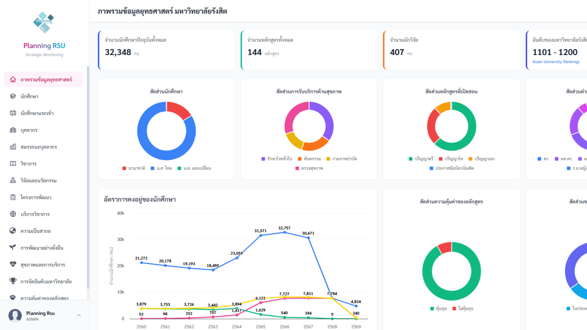
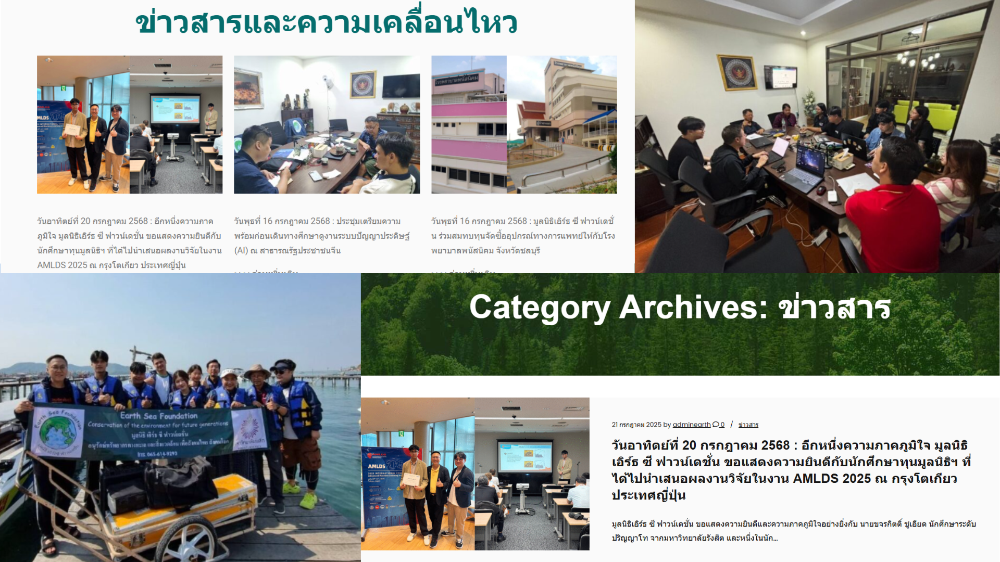
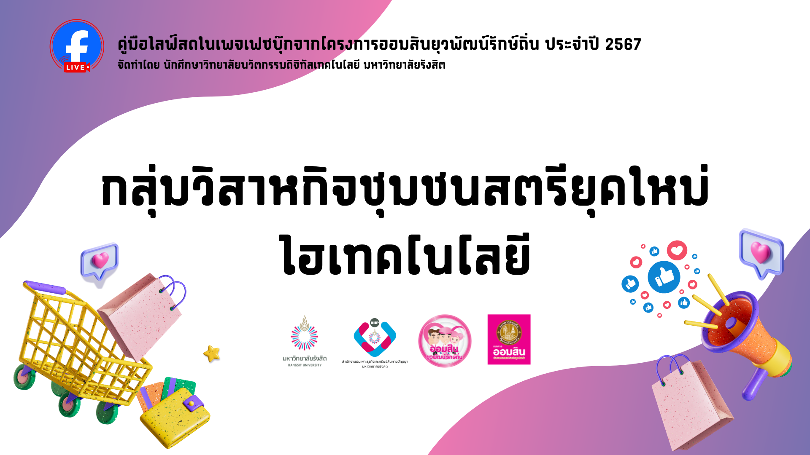
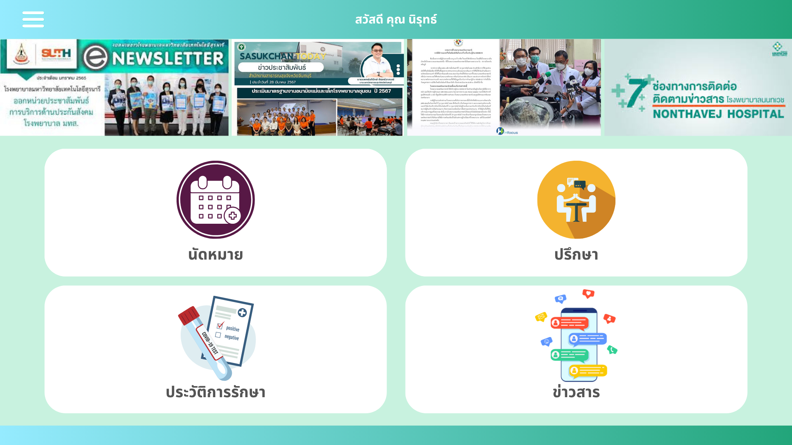

Planning & Development
An organizational strategic planning and analysis system with KPI tracking.
เจ้าหน้าที่วิเคราะห์ระบบผู้เชี่ยวชาญด้านการพัฒนาระบบสารสนเทศองค์กร และการบริหารจัดการเอกสารเชิงยุทธศาสตร์ พร้อมนำเทคโนโลยีมาขับเคลื่อนและยกระดับงานบริการดิจิทัล
ปัจจุบันดำรงตำแหน่ง เจ้าหน้าที่วิเคราะห์ระบบ มีประสบการณ์และความเชี่ยวชาญด้านการวิเคราะห์ความต้องการเพื่อพัฒนาระบบสารสนเทศองค์กร ควบคู่กับการใช้ข้อมูลเชิงสถิติสนับสนุนการวางแผนและการตัดสินใจเชิงยุทธศาสตร์ นอกจากทักษะด้านการออกแบบและพัฒนาระบบแล้ว ยังมีประสบการณ์ตรงด้านการบริหารจัดการเอกสารสำคัญ ทั้งเอกสารราชการ การเงิน และเอกสารเชิงยุทธศาสตร์ รวมถึงการประสานงานระดับองค์กรร่วมกับหน่วยงานชั้นนำ เช่น PTT DIGITAL และ มหาวิทยาลัยรังสิต
มุ่งมั่นที่จะนำทักษะการวิเคราะห์ระบบที่มีความละเอียดรอบคอบ และความสามารถด้านการจัดการเอกสาร มาร่วมขับเคลื่อนระบบสารสนเทศและการบริการดิจิทัลของกรมการแพทย์ให้มีประสิทธิภาพสูงสุด

An organizational strategic planning and analysis system with KPI tracking.

A project supporting the Sustainable Development Goals (SDGs) through data presentation and digital media.

พัฒนาและปรับปรุงระบบเว็บไซต์ด้วย WordPress เพื่อยกระดับประสบการณ์ผู้ใช้งาน (UX) และเพิ่มประสิทธิภาพในการนำเสนอข่าวสารด้านสิ่งแวดล้อมให้ประชาชนเข้าถึงข้อมูลได้ง่ายยิ่งขึ้น

ออกแบบประสบการณ์ผู้ใช้งาน (UX) และส่วนติดต่อผู้ใช้งาน (UI) บนแพลตฟอร์ม LINE Official Account สำหรับโปรเจกต์ Dewy โดยเน้นการวางโครงสร้างระบบ และออกแบบ Rich Menu ที่สวยงามและใช้งานง่าย เพื่อให้ผู้ใช้สามารถควบคุม ดูแล และติดตามสถานะของกระถางต้นไม้อัจฉริยะผ่านแอปพลิเคชัน LINE ได้อย่างสะดวกรวดเร็ว

สไลด์คู่มือสอนการใช้งานแพลตฟอร์ม LINE OA แบบทีละขั้นตอนสำหรับคนในชุมชนหลักหก อธิบายตั้งแต่การลงทะเบียนเข้าใช้งาน การค้นหาแหล่งงาน ไปจนถึงการติดต่อประสานงาน เพื่อให้ชาวชุมชนใช้งานระบบได้อย่างถูกต้องและเข้าถึงโอกาสทางอาชีพได้จริง

คู่มือสอนเทคนิค Facebook Live สำหรับกลุ่มวิสาหกิจชุมชนสตรียุคใหม่ไฮเทคโนโลยี แนะนำการใช้เครื่องมือดิจิทัลและกลยุทธ์การตลาดออนไลน์ เพื่อขยายฐานลูกค้าและเพิ่มยอดขาย

ออกแบบ UX/UI ใหม่เพื่อยกระดับการให้บริการผู้ป่วยให้ครอบคลุมและเชื่อมโยงข้อมูลสำคัญไว้ในที่เดียว ทั้งระบบนัดหมายแพทย์ ระบบปรึกษาออนไลน์ การแสดงประวัติการรักษา และระบบแจ้งเตือนข่าวสาร เพื่อช่วยให้ผู้ใช้เข้าถึงบริการสุขภาพได้อย่างรวดเร็ว มีประสิทธิภาพ และตอบโจทย์วิถีชีวิตยุคดิจิทัล

คู่มือสอนการใช้งานแพลตฟอร์ม 'Find my stress' เพื่อวิเคราะห์ภาวะออฟฟิศซินโดรมและความเครียดสะสม พร้อมแนวทางประเมินสุขภาพเบื้องต้นและคำแนะนำการปรับพฤติกรรมเพื่อสุขภาวะที่ดีขึ้น


Bachelor of Science in Digital Innovation
สามารถติดต่อเพื่อพูดคุยเกี่ยวกับโอกาสการทำงาน โปรเจกต์ หรือความร่วมมือในสาย IT ได้


{kind=link}
{kind=link}